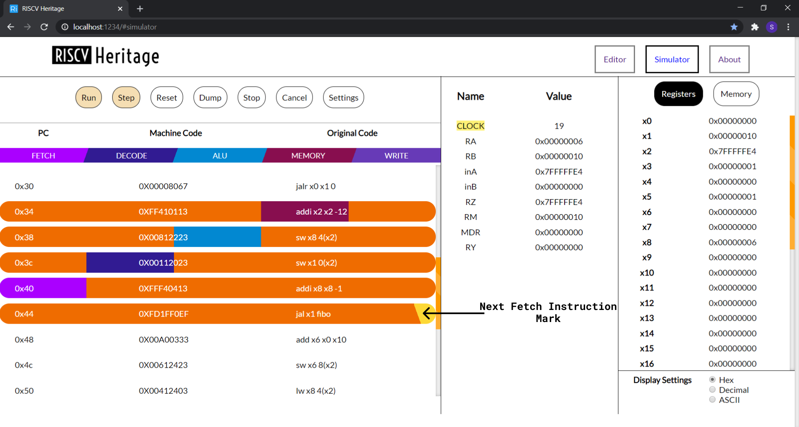
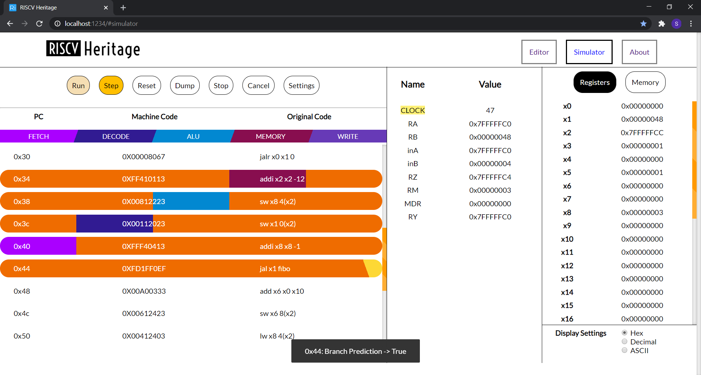

RISCV Heritage
The following website is a course project under
the guidance of Dr T.V Kalyan. It is a web simulator
which converts the Assembly code written RISCV syntax to Machine code
and provides a user-friendly environment for its execution. The simulator implements pipelining, branch
prediction and data forwarding, which can be enabled or disabled by the user.
Valid Instructions
R format:
add, and, or, sll, slt, sra, srl, sub, xor, mul, div, rem
I format:
addi, andi, ori, lb, ld, lh, lw, jalr
S format:
sb, sw, sd, sh
SB format:
beq, bne, bge, blt
U format:
auipc, lui
UJ format:
jal
Assembler Directives:
.text, .data, .byte, .half, .word, .dword, .asciiz
Team Members
Technology Stack
- Typescript
- HTML/CSS
- NodeJS (For Development Only)
File Structure
src
│ README.md
│ tsconfig.json
│
└───assets
│ index.html
│
└───css
│ style.css
│
└───js
│ main.ts
│
└───encode
│
└───execute
encode contains files required
to convert Assembly Code written in RISC V syntax into
Machine Code
execute contains files required to execute the generated Machine Code
main.ts is the entrypoint of the application
Features
- On pressing
Ctrl+S on
Editor Pane current file will be downloaded.
- On pressing
Ctrl+S on
Simulator Pane Output file will be downloaded if it’s assembled.
- Editor Pane supports
Ctrl+/ as comment shortcut
- On pressing
Ctrl+D on
Simulator Pane stats file will be downloaded provided that execution is complete.
General Instructions To Run Locally
- If you do not have a copy of
RISCV Heritage clone the repo and checkout GUI branch. If you do have the
project then go to step 2
git clone URL
git checkout GUI
- Install all dependencies
npm install
- Now to run the development server run the
following command in terminal
npm run start:dev
- Now access the
RISCV Heritage
by visiting http://localhost:1234/
- To build the project run the following
command in terminal
npm run build
Functionalities Our Project Offers
-
BreakPoint:- Users can
use a breakpoint for debugging. Users can select as many breakpoints as s(he) wants. During the
execution of instructions, the program will stop after the execution of selected instructions in the
order of program flow.
-
Run:- To run the
complete program in a single go, users can use it. For pipelined version the animation cycle
duration can be tuned by the user from the settings menu.
-
Step:- Run the
program instruction wise(one instruction at a time).
-
Stop:- Stop the
execution process using the stop button.
-
Reset:- Reset the
current execution process. It will also reset the memory and registers state.
-
Dump:- Users can
copy the machine code to clipboard using it.
-
Cancel:- Destroys
the current execution and moves one step back.
-
Settings:- Execution
configuration can be changed by clicking this button before assembling the code. If assembled then
it shows the configuration in READ ONLY mode.

- We provide our user with some options to
enable/disable
- Pipelined execution
- Data Forwarding
- Branch prediction
- Animation Cycle Duration, to
increase or decrease program execution speed for pipelined execution
- Each pipelined instruction execution
passes through five stages, Fetch, Decode, ALU, Memory, and Write Back. All these stages are
colour-coded. So when an instruction has completely executed in any stage, the instruction gets
colour-coded with a colour corresponding to the pipeline stage.

- We have added a separate pane for
pipelined execution through which the user can see the current status of pipelined ISA.

- To make the app more informative,
whenever there is a stall, data forwarding, pipeline flushing or branch prediction etc. Our application
shows a toast to notify such event.

-
Memory Segment displays only those
values into which something is explicitly written during program execution or in the data segment
and all other values which are not shown are 0x00
-
Although code segment data is shown
in memory it cannot be retrieved by the user, by accessing that location. This is to ensure that
there is no structural hazard.
-
On any error, the program will alert
the user and will not proceed further for execution
-
Any instruction which uses
Double like sd, ld are invalid since it is 32-bit system
-
We have assumed that hazards are
those dependencies which causes our pipeline to stall. So, any data dependency which are
successfully handled by data forwarding won’t be considered as a data hazard.
Latest Deployed version: RISCV Heritage